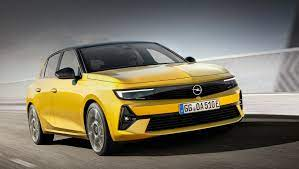

Opel Automobile GmbH (German pronunciation: [ˈoːpl̩]), usually shortened to Opel, is a German automobile manufacturer which has been a subsidiary of Stellantis since 16 January 2021. It was owned by the American automaker General Motors from 1929 until 2017 and the PSA Group, a predecessor of Stellantis, from 2017 until 2021. Opel vehicles are sold in the United Kingdom under the Vauxhall brand. Some Opel vehicles were badge-engineered in Australia under the Holden brand until 2020 and in North America and China under the Buick, Saturn, and Cadillac brands. Opel traces its roots to a sewing machine manufacturer founded by Adam Opel in 1862 in Rüsselsheim am Main. The company began manufacturing bicycles in 1886 and produced its first automobile in 1899. With the Opel RAK program, the world's first rocket program, under the leadership of Fritz von Opel, the company played an important role in the history of aviation and spaceflight: Various land speed records were achieved, and the world's first rocket-powered flights were performed in 1928 and 1929. After listing on the stock market in 1929, General Motors took a majority stake in Opel and then full control in 1931, making the automaker a wholly owned subsidiary, establishing an American ownership of the German automaker for nearly 90 years.[1] In March 2017, PSA agreed to acquire Opel, the English twin sister brand Vauxhall and the European auto lending business from General Motors for €2 billion ($2.3 billion), making the French automaker the second biggest in Europe, after Volkswagen.[8] Opel is still headquartered in Rüsselsheim am Main. The company designs, engineers, manufactures and distributes Opel-branded passenger vehicles, light commercial vehicles, and vehicle parts; together with its English sister marque Vauxhall, they are present in over 60 countries around the world.[9]
